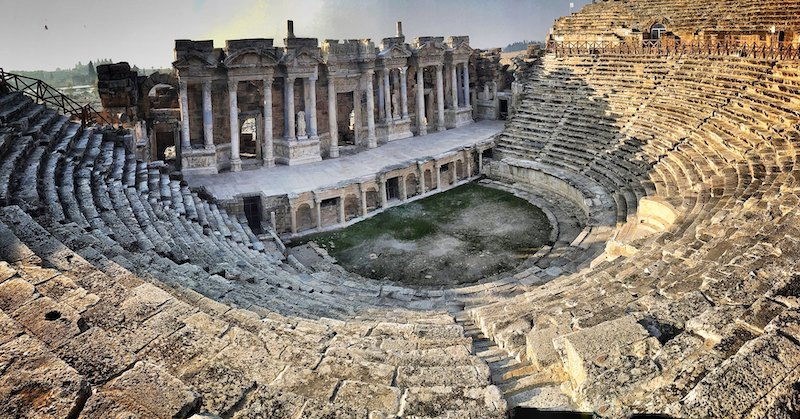
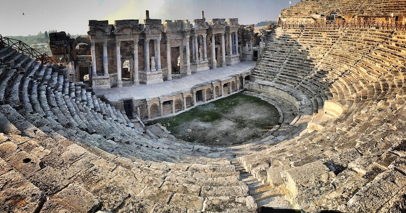

.png)
Düzce'nin tarihi, Anadolu coğrafyasının kucaklayıcı tarihine derin bir katkı sunar. Bu topraklar, binlerce yıldır birçok medeniyetin etkisi altında kalarak zengin bir kültür ve tarih mozaiği oluşturmuştur.
Antik dönemde, Düzce ve çevresi, Roma İmparatorluğu'nun sınırları içinde yer almaktaydı. Roma döneminin izleri, antik yerleşim alanları, kalıntılar ve heykellerle bu topraklarda hala hissedilebilmektedir. Roma İmparatorluğu'nun etkisi altında geçen bu dönem, arkeologlar için önemli kazı alanlarına dönüşmüştür.
Bizans İmparatorluğu'nun hakimiyetinde, Düzce, Bizans kültürünün ve mimarisinin bir parçası oldu. Kiliseler, manastırlar ve diğer dini yapılar bu dönemde inşa edildi. Bu yapılar, bölgenin dini ve kültürel geçmişine dair önemli ipuçları sunmaktadır.
Osmanlı İmparatorluğu'nun fetihleriyle birlikte Düzce, Osmanlı topraklarına katıldı. Bu dönemde tarım ve ticaret, bölgenin ekonomik yaşamının temelini oluşturdu. Osmanlı mimarisinin izlerini taşıyan eski konaklar ve çeşmeler, şehrin tarihini anlamak isteyenlere görsel bir şölen sunmaktadır.
1. yüzyılın başlarına kadar resmi bir il merkezi olarak kabul edilmeyen Düzce, 1999 yılında meydana gelen Marmara Depremi ile adını geniş kitlelere duyurdu. Bu doğal felaketin ardından kent, yeniden yapılanma ve gelişme sürecine girdi. Altyapı çalışmaları, modern binalar ve yaşam standartlarının artırılması, Düzce'nin 21. yüzyılda modern bir şehir haline gelmesine olanak tanıdı.
Düzce'nin antik dönemdeki tarihi hakkında kesin tarihler vermek zordur ve net bir şekilde belirlenmemiş olabilir. Bu nedenle genel bir ifade kullanmak daha uygun olacaktır. Eğer daha spesifik bilgiler arıyorsanız, arkeolojik kaynaklara veya bölge tarihine odaklanmış daha ayrıntılı kaynaklara başvurmanız önerilir.
 
